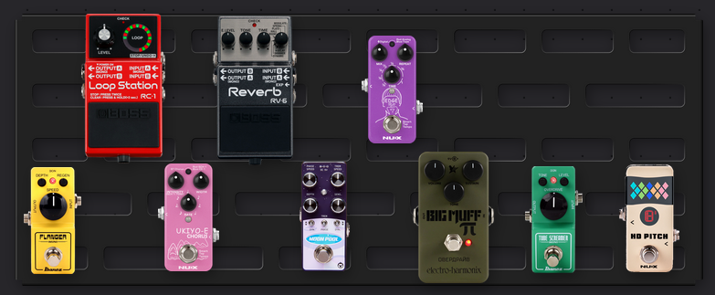

My name is Wrenne Claude. I make music under a solo nom de plume, as well as with a band, Allarme, where I play the electric guitar and sometimes do vocals. I also play the piano as a hobby.
I study computer science at the Polish-Japanese Academy of Information Technology in Warsaw, Poland, where I'm also currently based.
I speak Polish, English and French fairly fluently, and I'm currently learning Japanese.
My e-mail is wrenneclaude [at] proton [dot] me.
You can get my PGP key here.
You can also find me on Discogs, Steam, Youtube, and other notable social media if you just look "Wrenne Claude" up, as I try to include that everywhere.
My solo music is available on bandcamp and most streaming services.
I like to describe my music as a blend of shoegaze and slowcore. I try to create interesting soundscapes and I enjoy playing in slow, mellow rhythms.
I also love cranking up both my distortion pedals in order to create deafening, roaring guitars for my tracks. When I play with Allarme, almost 100% of the time I have at least one distortion pedal turned on.
I'm not that radical, but I like to stand my ground. I'm all for the libre (or more generally speaking, FLOSS) software movement. I use Nobara and Gentoo GNU/Linux daily (daily drive the former, the latter as a VM) and I'm a big hater of all things Apple and Microsoft.
Philosophy wise, I'm opposed to the idea of nihilism, and instead I dabble in existentialism. I like works that explore the absurd.
I used to be a marxist, later identifying more as an "anarcho-syndicalist", but now I don't consider myself educated enough to categorize my beliefs. I do fancy the idea of a calm and collected anarchy, or anything money-less to be frank, but I wouldn't call myself an anarchist per se.
My main electric guitar is a Fender Jimi Hendrix signature Stratocaster in white (with an upside-down headstock, which is a nice touch). I also have an Epiphone Les Paul Custom Pro EB.
When I record my solo music I use whatever cab sims are built into Reaper. Here is a quick reconstruction of my pedalboard that I made using Pedal Playground.
